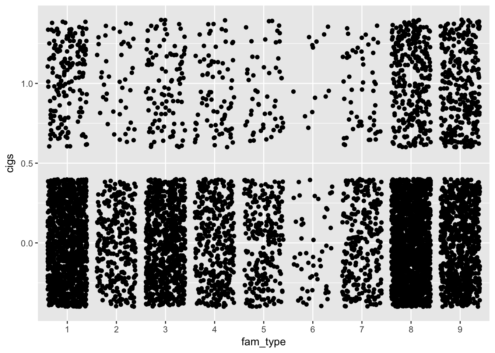

6 Regression using a binary outcome
You can also run a regression using a binary variable. Let’s recode and then use our cigarettes variable to look at predictors of buying any cigarretes at all.
cex$cigs<-0
cex$cigs[cex$cigarettes>0]<-1
mod6<-lm(cigs~educ_ref+
ref_race+
inc_rank+
sex_ref+
fam_type,
data=cex)
summary(mod6)##
## Call:
## lm(formula = cigs ~ educ_ref + ref_race + inc_rank + sex_ref +
## fam_type, data = cex)
##
## Residuals:
## Min 1Q Median 3Q Max
## -0.5228 -0.2119 -0.1498 -0.0431 0.9906
##
## Coefficients:
## Estimate Std. Error t value Pr(>|t|)
## (Intercept) 0.258750 0.108260 2.390 0.016877 *
## educ_ref10 -0.101923 0.109432 -0.931 0.351693
## educ_ref11 0.006414 0.108639 0.059 0.952923
## educ_ref12 0.003200 0.107796 0.030 0.976321
## educ_ref13 -0.045853 0.107922 -0.425 0.670947
## educ_ref14 -0.023866 0.108584 -0.220 0.826037
## educ_ref15 -0.135594 0.108102 -1.254 0.209781
## educ_ref16 -0.166795 0.108931 -1.531 0.125777
## educ_ref17 -0.154400 0.111589 -1.384 0.166523
## ref_race2 -0.028553 0.015545 -1.837 0.066286 .
## ref_race3 0.119595 0.073066 1.637 0.101723
## ref_race4 -0.036712 0.023509 -1.562 0.118429
## ref_race5 0.001864 0.076077 0.024 0.980456
## ref_race6 -0.026429 0.041673 -0.634 0.525969
## inc_rank -0.049425 0.021480 -2.301 0.021433 *
## sex_ref2 -0.036232 0.010258 -3.532 0.000415 ***
## fam_type2 0.011057 0.024607 0.449 0.653195
## fam_type3 -0.003627 0.017747 -0.204 0.838057
## fam_type4 0.051879 0.022608 2.295 0.021784 *
## fam_type5 0.049327 0.026059 1.893 0.058421 .
## fam_type6 0.019565 0.050344 0.389 0.697569
## fam_type7 0.031451 0.026456 1.189 0.234563
## fam_type8 -0.005898 0.015284 -0.386 0.699560
## fam_type9 0.142249 0.016964 8.385 < 2e-16 ***
## ---
## Signif. codes: 0 '***' 0.001 '**' 0.01 '*' 0.05 '.' 0.1 ' ' 1
##
## Residual standard error: 0.3708 on 5668 degrees of freedom
## (1132 observations deleted due to missingness)
## Multiple R-squared: 0.05822, Adjusted R-squared: 0.05439
## F-statistic: 15.23 on 23 and 5668 DF, p-value: < 2.2e-16g4<-ggplot(cex,aes(x=fam_type,y=cigs,group=1))+
geom_jitter()
g4